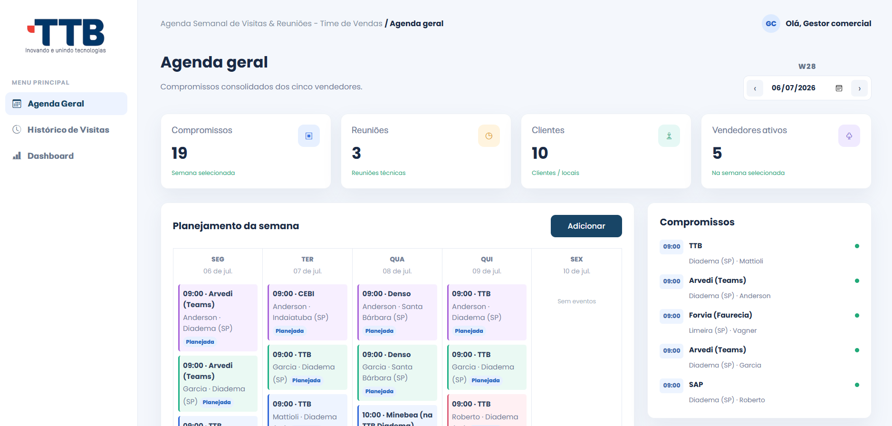
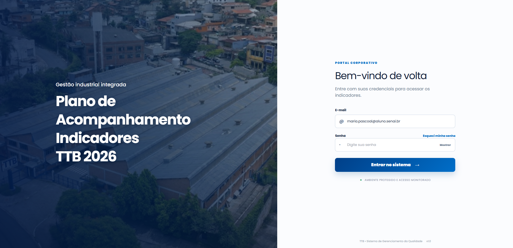

×

Tecnologias:

Aplicação web desenvolvida para organizar e acompanhar as atividades da equipe comercial da empresa TTB.

Plataforma centralizada para o gerenciamento de indicadores e metas.
Tecnologias: